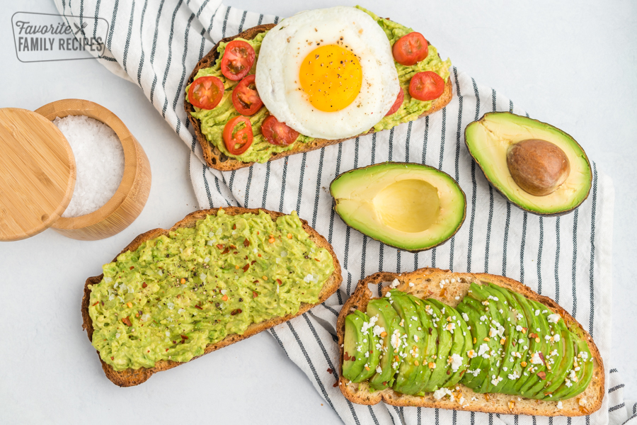

Open Faced Avocado Spread Sandwiches

Description
This is an easy to-go healthy breakfast recipe! I love how you can customize it however you want by adding any topping you like. E.g. eggs, fresh spinach, baby tomatoes, fresh cilantro, radishes. Just make sure you have avocados in the fridge! 😊
Ingredients
- Fresh bread, sliced into 8 to 10 half-inch slices (8-10 slices of bread)
- 2 Ripe Avocados, pittend and peeled
- 1/8 tsp salt, or to taste (we love sea salt)
- 1 tsp freshly squeezed lemon juice
- Black pepper to taste, optional
- Extra Virgin Olive Oil, to drizzle over the top
Directions
- In a medium bowl, mash together 2 ripe avocados. A potato masher is the fastest route.
- Stir 1/8 tsp salt (or to taste) and 1 tsp fresh lemon juice into the mashed avocados until well combined.
- Lightly toast your sliced bread (if desired) with a small pat of butter until the edges are golden brown.
- Add a generous layer of avocado spread over each piece of toast. Add your desired toppings, then drizzle each piece of toast with extra virgin olive oil and top with freshly cracked black pepper. So so good